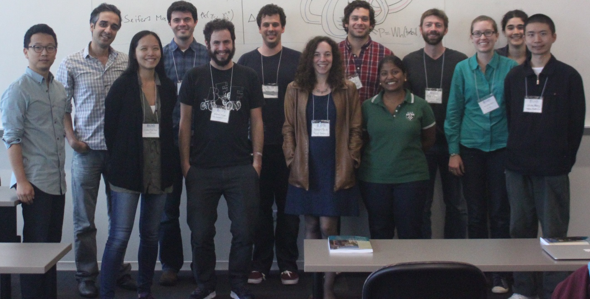

AMS Special Session
Geometric Perspectives in Knot Theory
Loyola University, Chicago
October 3-4, 2015
Schedule of speakers

Pictured left to right:
JungHwan Park, Faramarz Vafaee, Christine Ruey Shan Lee, David Krcatovich, Moshe Cohen, Peter Feller, Allison Moore, John Baldwin, Arunima Ray, Matthew Hogancamp, Katherine Vance, Allison Miller, Shida Wang
Other speakers from the session not pictured:
Christopher Atkinson, David Futer, Steven Sivek, C.-M. Michael Wong